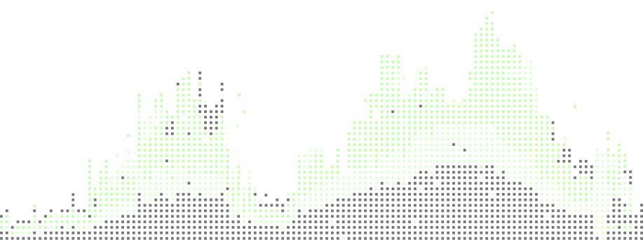

01/ Body response
The body reacts before awareness. m.2_os detects physiological shifts and captures the patterns that shape each memory.
Turns physiological moments into structured memories you can return to
Signal becomes memory
Get access to m.2_os
Experience becomes structured memory.
m.2_os transforms captured signals into
memory, interpreting reactions, preserving
patterns making lived moments accessible.
The body reacts before awareness. m.2_os detects physiological shifts and captures the patterns that shape each memory.
Memories are shaped by their surroundings. m.2_os records environmental conditions to preserve the context of each moment.
Moments leave traces behind. m.2_os preserves sound, speech, and visual fragments to enrich memory reconstruction.
Memory 0427-B // Whale Encounter // 25s
Memory Significance
78.3/100Adaptive Breathing
Elevated During Recognition
00:08 / 00:25
00:23 / 00:25
Subtle Thermal Shift
Memory 0428-B // Protest // 20s
Memory Significance
82/100Heightened Engagement
Elevated During Collective Response
00:05 / 00:20
00:17 / 00:20
Increased Response
Memory 0429-B // Cultural Discovery In India // 23s
Memory Significance
72.5/100Focused Observation
Elevated During Discovery
1:34 / 25:03
1:34 / 25:03
Mild Thermal Response